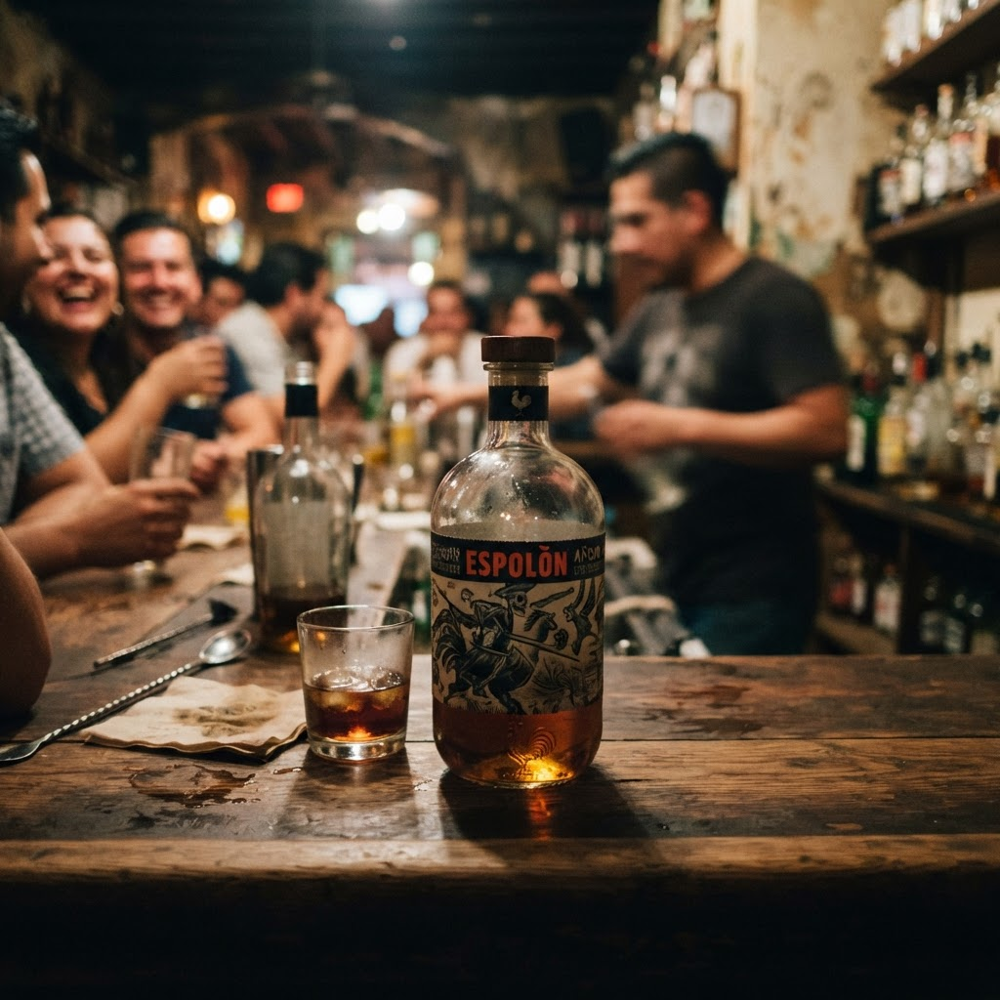

Сколько стоит espolon anejo купить в Московском районе

Московский район не спит, и когда душа просит особого настроения, время не должно стоять преградой. Мы обеспечиваем оперативную ночную доставку за один час, чтобы ваш вечер не прерывался в поисках желаемого.
Сколько стоит espolon anejo купить в Московском районе
Качество выдержанной текилы определяется не только выдержкой в бочке, но и скоростью, с которой она оказывается на вашем столе в нужный момент. Когда вы задаетесь вопросом, сколько стоит espolon anejo купить в Московском районе, вы в первую очередь платите за комфорт и оперативность. Наша логистика выстроена таким образом, чтобы курьер преодолевал городские преграды за шестьдесят минут. Мы исключаем томительное ожидание, понимая, что в ночное время каждая минута имеет значение для атмосферы вашего отдыха. Поиск качественного напитка в позднее время часто превращается в испытание, но наш сервис делает этот процесс прозрачным и быстрым. Вы получаете оригинальный продукт в строгом соответствии с требованиями к хранению и транспортировке. Мы не просто привозим заказ, мы доставляем готовое решение для тех, кто ценит свое время и предпочитает не выходить из дома, когда город погружается во мрак. Цена нашей работы — это пунктуальность и полное отсутствие лишних вопросов. Вы делаете выбор, мы берем на себя ответственность за соблюдение заявленного временного интервала, независимо от дорожных условий или погодных факторов.
Нюансы оперативной доставки в ночное время
Работа в ночном режиме требует особого профессионализма, который мы оттачивали годами практики. Понимая, что клиенты обращаются к нам за срочностью, мы оптимизировали каждый этап пути. Заказ поступает в обработку мгновенно, и курьер выходит на маршрут спустя считанные минуты после подтверждения. Наш подход исключает задержки, характерные для обычных служб, так как мы специализируемся именно на экспресс-доставке в пределах района. Мы знаем все короткие пути и тайные тропы, позволяющие сократить время в пути до минимума. Надежность нашей логистики гарантирует, что даже при высокой нагрузке на транспортную сеть района вы получите желаемое строго в рамках установленного часового лимита. Мы работаем для тех, кто не привык ждать, и наш опыт позволяет гарантировать результат даже в самые непростые часы. Мастерство заключается в дисциплине: мы ценим доверие заказчика, поэтому наше слово крепче, чем выдержка лучшей текилы. Каждый выезд — это отточенное действие, направленное на то, чтобы ваш вечер прошел без суеты и досадных ожиданий.
А если курьер не успеет доставить заказ за час?
Наша система логистики настроена таким образом, что подобные случаи практически исключены в условиях Московского района. Если же возникнет непредвиденная задержка, мы свяжемся с вами заранее, чтобы урегулировать вопрос и предложить компенсацию. Ваш комфорт и наша репутация для нас превыше всего.
Итог
Итог всегда один: назвать следующий шаг покупателю — оформить заказ и получить его в течение часа в своём районе.
Заказать доставку
Оформите заказ сейчас: привезём за 40-60 минут в любой район Петербурга, круглосуточно.
Призыв